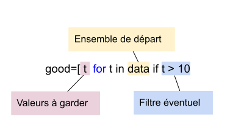

Thème 2 - Types construits⚓︎
| 00 | Les Listes en Python |
|---|

Programme Première
| Contenus | Capacités attendues | Commentaires |
|---|---|---|
| Tableau indexé, tableau donné en compréhension | Lire et modifier les éléments d’un tableau grâce à leurs index. Construire un tableau par compréhension. Utiliser des tableaux de tableaux pour représenter des matrices : notation a [i][j]. Itérer sur les éléments d’un tableau. |
Seuls les tableaux dont les éléments sont du même type sont présentés. Aucune connaissance des tranches (slices) n’est exigible. L’aspect dynamique des tableaux de Python n’est pas évoqué. Python identifie listes et tableaux. Il n’est pas fait référence aux tableaux de la bibliothèque NumPy. |
Notion de tableau, indices⚓︎
En informatique (comme ailleurs...), un tableau permet de stocker de façon structurée plusieurs valeurs, en général de même type1.
Voici comment on se représente traditionnellement un tableau de 6 entiers, avec des cases (ou cellules):

Bien entendu, il faut stocker ce tableau dans un variable et lui donner un nom. Appelons-le t. Ce tableau est ordonné, le premier élément est 4, le deuxième est 2, et le dernier est 12.
On repère chaque élément du tableau par sa position, le numéro de la case, qu'on appelle indice.

Généralement, on utilise la notation t[i] pour désigner l'élement d'indice i du tableau t. Par exemple, dans notre exemple, t[3] contient la valeur 42.
Enfin la taille d'un tableau est le nombre d'éléments qu'il contient. Ici le tableau t a une taille égale à 6.
Tableau et liste de Python⚓︎
Le type list
En Python, on implémente le type abstrait de tableau par le type list. On définit un tableau avec des crochets et on sépare ses éléments par des virgules. Par abus de langage on parle de liste plutôt que de tableau2.
Une liste vide se déclarera par [].
Déclaration d'une liste⚓︎
Exemple 1
>>> t = [4, 2, 1, 42, 78, 12]
>>> type(t)
<class 'list'>
>>> famille = ["Bart", "Lisa", "Maggie"] # (1)
>>> type(famille)
<class 'list'>
- Une liste vide se déclarera avec
[].🐍 Script PythonNous verrons plus tard qu'il est fréquent dans les exercices de partir d'une liste vide et d'ajouter progressivement des éléments.>>> copies_corrigees = []
Accès aux éléments d'une liste⚓︎
Exemple 2
>>> t = [4, 2, 1, 42, 78, 12]
>>> t[3]
42
>>> t[-1]
12
>>> famille = ["Bart", "Lisa", "Maggie"] # (1)
>>> famille[0]
'Bart'
>>> famille[1]
'Lisa'
>>> famille[2]
'Maggie'
>>> famille[3]
Traceback (most recent call last):
File "<pyshell>", line 1, in <module>
IndexError: list index out of range
Remarques :
-
Un indice qui dépasse la valeur
longueur de la liste -1provoquera donc une erreurlist index out of range. C'est une erreur très fréquente lorsqu'on manipule des listes. -
Il est par contre possible d'utiliser des indices négatifs. On utilise par exemple très souvent l'indice -1 pour accéder au dernier élément de la liste, sans avoir à connaître la longueur de celle-ci :
>>> famille[-1]
'Maggie'
Longueur d'une liste⚓︎
Exemple 3
La longueur d'une liste sera donnée par la fonction len(), qui renvoie donc un nombre entier positif ou nul.
>>> len(famille)
3
Remarques :
- La liste vide a pour longueur 0 :
🐍 Script Python
>>> len([]) 0 - Le dernier élément d'une liste
maliste(non vide) sera donc toujours l'élément d'indicelen(maliste)-1.🐍 Script Python>>> famille[len(famille) - 1] 'Maggie' - Comme indiqué précédemment, ce dernier élément est aussi accessible par l'indice -1.
Remarques bis:
- on obtient la taille d'une liste avec la fonction
len; - un indice supérieur à
len(t) - 1provoque une erreurIndexError: list index out of range(en dehors de la liste); - on peut utiliser les indices négatifs: en particulier l'indice -1 permet d'accèder facilement au dernier élement.
Parcours des éléments d'une liste  ⚓︎
⚓︎
Il existe principalement deux méthodes pour parcourir une liste :
- par ses éléments
- par les indices.
Mais dans les deux cas on utilise une boucle for.
Ces deux méthodes sont à maîtriser impérativement.
Parcours «par éléments»⚓︎
C'est la méthode la plus naturelle, celle déjà vue lors de la présentation de la boucle for. Nous allons simplement itérer sur les éléments de la liste.
Exemple 4
Le code :
| 🐍 Script Python | |
|---|---|
1 2 3 4 | |
Bart
Lisa
Maggie
Remarque :
- Penser à donner un nom signifiant à la variable qui parcourt la liste. Il aurait par exemple été très maladroit d'écrire
🐍 Script PythonEn effet le nom de variable
for k in famille: print(k)kest habituellement utilisé pour les nombres (les indices, les compteurs...).
Exercice 1
Après un référendum, la liste urne contient uniquement des 'oui' ou des 'non'.
Déterminer le vainqueur de ce référendum.
urne = ['oui', 'non', 'non', 'oui', 'oui', 'oui', 'non', 'oui', 'oui', 'oui', 'non', 'oui', 'non', 'non', 'oui', 'non', 'non', 'oui', 'oui', 'oui', 'oui', 'non', 'non', 'oui', 'non', 'oui', 'non', 'non', 'non', 'oui', 'oui', 'oui', 'oui', 'non', 'oui', 'non', 'non', 'oui', 'non', 'non', 'oui', 'non', 'non', 'non', 'non', 'non', 'non', 'non', 'oui', 'non', 'non', 'oui', 'oui', 'non', 'oui', 'oui', 'oui', 'oui', 'oui', 'oui', 'non', 'non', 'oui', 'oui', 'oui', 'oui', 'non', 'non', 'non', 'oui', 'oui', 'oui', 'non', 'non', 'non', 'non', 'oui', 'non', 'non', 'non', 'non', 'non', 'non', 'non', 'non', 'oui', 'non', 'oui', 'non', 'non', 'oui', 'oui', 'non', 'non', 'non', 'oui', 'oui', 'non', 'oui', 'oui', 'non', 'non', 'oui', 'oui', 'oui', 'non', 'oui', 'non', 'oui', 'oui', 'oui', 'oui', 'oui', 'non', 'non', 'non', 'non', 'oui', 'oui', 'oui', 'non', 'oui', 'non', 'oui', 'oui', 'oui', 'oui', 'oui', 'non', 'non', 'oui', 'non', 'non', 'non', 'non', 'non', 'non', 'oui', 'non', 'non', 'oui', 'non', 'non', 'oui', 'non', 'non', 'oui', 'oui', 'oui', 'oui', 'oui', 'oui', 'non', 'oui']
| 🐍 Script Python | |
|---|---|
1 2 3 4 5 6 7 | |
Parcours «par indice»⚓︎
Chaque élément étant accessible par son indice (de 0 à len(liste) - 1 ), il suffit de faire parcourir à une variable i l'ensemble des entiers de 0 à len(liste) - 1, par l'instruction range(len(liste)) :
Exemple 5
Le code :
| 🐍 Script Python | |
|---|---|
1 2 3 4 | |
Bart
Lisa
Maggie
 Bonne habitude à prendre : nommer sa variable d'indice
Bonne habitude à prendre : nommer sa variable d'indice i, j, k ou indice mais pas autre chose !
Avantages et inconvénients de chaque méthode⚓︎
Parcours par élément⚓︎
for membre in famille:
print(membre)
Les avantages 
- la simplicité : un code plus facile à écrire, avec un nom de variable explicite.
- la sécurité : pas de risque d'
index out of range!
Les inconvénients 
- méthode rudimentaire : lorsqu'on est «positionné» sur un élément, il n'est pas possible d'accéder au précédent ou au suivant. (et c'est parfois utile).
- on n'a pas accès à l'indice correspondant à la valeur.
- on ne peut pas modifier l'élément sur lequel on est positionné :
>>> lst = [1, 2, 3]
>>> for nb in lst:
nb = nb * 2 # (1)
>>> lst
[1, 2, 3] # (2)
- On veut multiplier par 2 chaque élément de la liste
- La liste
lstn'a pas changé...
⚓︎
Parcours par indice
for i in range(len(famille)):
print(famille[i])
Les avantages
- le contrôle : en parcourant par indice, on peut s'arrêter où on veut, on peut accéder au suivant/précédent...
- pour les tableaux à deux dimensions, on retrouve la désignation classique d'un élément par numéro de ligne / numéro de colonne.
Les inconvénients
- la complexité : il faut connaître le nombre d'éléments de la liste (ou le récupérer par la fonction
len()) - le risque d'erreur : encore et toujours le
index out of range...
Exercice 2
On donne la liste :
lst = [3, 1, 4, 1, 5, 9]
- Afficher les éléments de cette liste.
- Afficher les éléments de cette liste dans l'ordre inverse (en commençant par 9)
| 🐍 Script Python | |
|---|---|
1 2 3 4 | |
Exercice 3
Trouvez le nombre qui est exactement à la même place dans la liste list1 et dans la liste list2, sachant que :
- les deux listes ont la même taille
- vous n'avez droit qu'à une seule boucle
for.
list1 = [8468, 4560, 3941, 3328, 7, 9910, 9208, 8400, 6502, 1076, 5921, 6720, 948, 9561, 7391, 7745, 9007, 9707, 4370, 9636, 5265, 2638, 8919, 7814, 5142, 1060, 6971, 4065, 4629, 4490, 2480, 9180, 5623, 6600, 1764, 9846, 7605, 8271, 4681, 2818, 832, 5280, 3170, 8965, 4332, 3198, 9454, 2025, 2373, 4067]
list2 = [9093, 2559, 9664, 8075, 4525, 5847, 67, 8932, 5049, 5241, 5886, 1393, 9413, 8872, 2560, 4636, 9004, 7586, 1461, 350, 2627, 2187, 7778, 8933, 351, 7097, 356, 4110, 1393, 4864, 1088, 3904, 5623, 8040, 7273, 1114, 4394, 4108, 7123, 8001, 5715, 7215, 7460, 5829, 9513, 1256, 4052, 1585, 1608, 3941]
| 🐍 Script Python | |
|---|---|
1 2 3 4 5 6 | |
Exercice 4
Dans la liste
lst = [2428970, 1518306, 4971405, 1690994, 7918102, 4030834, 8830131, 7514856, 7903128, 6307569, 6624056, 5260490, 6447835, 4598783, 9108626, 5045240, 4128269, 4460134, 2497873, 5076659, 8104003, 7604887, 7451976, 4136924, 5691945, 8726293, 7855592, 3562473, 8849129, 6488474, 5303587, 2606124, 5484044, 4559758, 7592232, 2211406, 9974334, 7988936, 7582946, 7668748, 1799997, 3837917, 3196209, 7064342, 2543765, 1182013, 7253381, 1153735, 1037391, 4375946, 4445821, 5965587, 6001887, 4162629, 5235783, 8716582, 4901175, 5445422, 1120005, 8332321, 7075046, 2194175, 5557300, 2887907, 5103214, 2520744, 5104399, 2065665, 3035703, 7890213, 1758301, 3407982, 1355453, 4896338, 7979392, 9671602, 9690721, 7423779, 7423780, 3080825, 6785783, 3836837, 7310931, 1857470, 3492507, 2823231, 1492310, 1911148, 9620515, 5564910, 7009452, 7464745, 9608747, 7267383, 6939140, 6556578, 3592267, 8135497, 4881660, 5346884, 6859150]
| 🐍 Script Python | |
|---|---|
1 2 3 4 5 | |
Création de listes⚓︎
Jusqu'à présent on a créé des listes en extension, c'est-à-dire qu'on a écrit tous les éléments un par un entre crochets. Voici deux autres façons de faire, souvent pratiques et parfois plus rapides lorsque la taille de la liste est grande.
Avec une boucle for et la méthode append
On crée une liste vide, puis on lui ajoute élément par élément.
Création d'une liste contenant les entiers multiples de 3 ou de 5 inférieurs à 100:
| 🐍 Script Python | |
|---|---|
1 2 3 4 | |
Construction d'une liste en compréhension
C'est une grande caractéristique du langage Python (même si ce n'est pas une exclustivité) : la méthode de liste en compréhension propose une manière élégante, rapide et naturelle pour créer des listes.
«en compréhension», pourquoi ?
Cette expression vient des mathématiques. On dit qu'on définit un sous-ensemble par compréhension lorsqu'on part d'un ensemble plus grand dont on ne garde que les éléments vérifiant une certaine propriété.
Exemple 6 
Imaginons que nous possédons une liste data de températures, dont nous ne voulons garder que celles strictement supérieures à 20.
>>> data = [1, 7, 9, 15, 5, 20, 10, 18]
>>> good = [p for p in tab1 if p > 10]
>>> good
[15, 20, 18]
Explications :

le filtre éventuel⚓︎
C'est lui qui donne tout son sens à cette méthode : il permet de ne garder que certaines valeurs. Il est pourtant éventuel : que se passe-t-il s'il n'y a pas de filtre ?
>>> data = [17, 22, 15, 28, 16, 13, 21, 23]
>>> good = [t for t in data]
>>> good
[17, 22, 15, 28, 16, 13, 21, 23]
Élements identiques
Il est souvent pratique d'initialiser une liste de taille donnée, souvent en la remplissant de la même valeur, souvent 0. Par exemple, pour produire une liste contenant 26 zéros:
>>> lst = 26 * [0]
>>> lst
[0, 0, 0, 0, 0, 0, 0, 0, 0, 0, 0, 0, 0, 0, 0, 0, 0, 0, 0, 0, 0, 0, 0, 0, 0, 0]
Exercice 5
Construire une liste contenant tous les nombres inférieurs à 100 qui sont divisibles par 7.
| 🐍 Script Python | |
|---|---|
1 2 3 4 | |
Exercice 6
On considère la liste
temp = [11, 28, -16, -18, -10, 16, 10, 16, 2, 7, 23, 22, -4, -2, 19, 16, 22, -8, 18, -14, 29, -1, 16, 22, -5, 6, 2, -4, 9, -17, -13, 22, 14, 24, 22, -9, -18, -9, 25, -11, 17, 17, 25, -10, 2, -18, 29, 14, -16, 7]
Construire la liste temp_pos qui ne contient que les éléments positifs de temp.
| 🐍 Script Python | |
|---|---|
1 2 3 4 | |
``` " ) }}
Exercice 7
On considère la liste lst = [51, 52, 66, 91, 92, 82, 65, 53, 86, 42, 79, 95]. Seuls les nombres entre 60 et 90 ont une signification : ce sont des codes ASCII (récupérables par la fonction chr ).
Créer (en compréhension) une liste sol qui contient les lettres correspondants aux nombres ayant une signification.
>>> lst = [51, 52, 66, 91, 92, 82, 65, 53, 86, 42, 79, 95]
>>> decode = [chr(k) for k in lst if k > 60 and k < 90]
>>> decode
['B', 'R', 'A', 'V', 'O']
Modification de liste⚓︎
En Python, les objets de type list sont modifiables (on emploie le mot mutable). Et c'est souvent une bonne chose, car des listes peuvent évoluer après leur création.
Modification d'un élément existant
On modifie un élément du tableau par simple affectation, en écrasant sa valeur avec la nouvelle.
>>> famille = ["Bart", "Lisa", "Maggie"]
>>> famille[0] = "Bartholomew" # oui, c'est son vrai nom
>>> famille
['Bartholomew', 'Lisa', 'Maggie']
Ajout d'un élément en fin de liste
La méthode append permet d'ajouter un élément en fin de liste (et donc d'augmenter la taille de la liste).
>>> famille = ["Bart", "Lisa", "Maggie"]
>>> famille.append("Homer")
>>> famille
['Bart', 'Lisa', 'Maggie', 'Homer']
Suppression d'un élément
La métode remove permet de supprimer la première occurrence de l'élément (et seulement la première). À condition bien entendu que l'élément soit dans la liste...
>>> matieres = ["nsi", "maths", "anglais", "français", "maths"]
>>> matieres.remove("maths")
>>> matieres
["nsi", "anglais", "français", "maths"]
>>> matieres.remove("espagnol")
Traceback (most recent call last):
File "<pyshell>", line 1, in <module>
ValueError: list.remove(x): x not in list
Remarques :
- Attention,
removen'enlève que la première occurrence de l'élément désigné. S'il y en a d'autres après, elles resteront dans la liste :🐍 Script Python>>> lst = [3, 1, 4, 5, 1, 9, 4] >>> lst.remove(4) >>> lst [3, 1, 5, 1, 9, 4] - Si l'élément à supprimer n'est pas trouvé, un message d'erreur est renvoyé :
🐍 Script Python
>>> lst = [3, 1, 4, 5, 1, 9] >>> lst.remove(2) Traceback (most recent call last): File "<pyshell>", line 1, in <module> ValueError: list.remove(x): x not in list
Exercice 8
Dans la liste suivante:
- remplacer
"Loki"par"Thor" - ajouter
"Dr. Strange" - supprimer l'intrus.
avengers = ["Black Widow", "Captain America", "Loki", "Iron Man", "Hulk", "Batman", "Hawkeye"]
avengers[2] = 'Thor'
avengers.append('Dr. Strange')
avengers.remove('Batman')
Un phénomène inquiétant : la copie de liste (Hors Programme enfin presque ....)⚓︎
une copie un peu trop parfaite
Observez le code ci-dessous, réalisé sans trucage.
>>> listA = [1, 2, 3]
>>> listB = listA
>>> listA.append(7)
>>> listB
[1, 2, 3, 7]
>>> listB.append(8)
>>> listA
[1, 2, 3, 7, 8]
Tout se passe comme si les listes listA etlistB étaient devenus des clones «synchronisés» depuis l'affectation listB = listA.
Analyse grâce à PythonTutor
L'illustration de PythonTutor nous donne la clé de l'énigme :

listA etlistB sont en fait un seul et même objet.
Comment en avoir le cœur net ? En observant leur adresse-mémoire, disponible grâce à la fonction id :
>>> id(listA)
140485841327616
>>> id(listB)
140485841327616
Mais alors, comment copier le contenu d'une liste vers une autre sans créer un clone ?⚓︎
Exemple fondateur n°12
>>> listA = [3, 4, 5]
>>> listB = list(listA)
listA.copy(), ou encore listA[::]...
Exercice 9
Effectuer les tests nécessaires pour prouver que l'exemple précédent a bien produit deux objets différents.
>>> listA = [3, 4, 5]
>>> listB = list(listA)
>>> listA.append(9)
>>> listB
[3, 4, 5]
>>> id(listA)
140157471522368
>>> id(listB)
140157465797184
-
même si Python l'autorise, il n'y a pas beaucoup de situations où on va créer un tableau avec des valeurs de types différents. ↩
-
en fait la liste est un autre type abstrait de données en informatique. Python identifie un peu les deux. C'est un peu plus compliqué en réalité, mais c'est une autre histoire... ↩